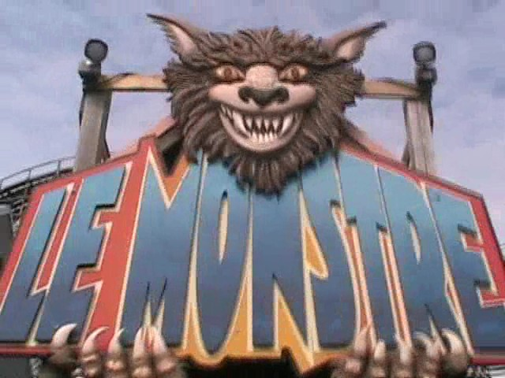

| |
Le Monstre Review
We're here at La Ronde. Today, we'll be reviewing Le Monstre. The big wooden coaster that the French Canadians used to cheat with and rig the Tournament of Thrills (How pitiful). After getting in the Morgan trains, which aren't nearly as bad on this ride as on other rides due to the single lap bar, the trains dispatch. Now Le Monstre is supposed to race. The key word here is SUPPOSED. However, due to sh*tty operations, the station being unorganized, and one train leaving 3 minutes before the other, it almost NEVER races. Ironically, my one 2008 ride, it raced, and it was the only time it raced the whole day. If you look in my footage, you'll NEVER see it racing. Anyways, you dispatch and slowly go through some straight track. You turn and then go through some more straight track. It at least looks cool being surrounded by all that wood. After one big turn, we reach the lifthill. The other side has appeared, and we're off. You just keep climbing as Le Monstre has one of the slowest lifthills in the world. Eventually, after 5 minutes, you head down the drop. You're not going that fast, which is a big dissapointment considering the size of the ride. At this point, the other side is long gone due to uneven lifthills, which make for unfair coaster races, even when they race. But it doesn't matter. You then go through some funky turn which gives you a lot of laterals, but to our dissapointment, they're not fun. But on the bright side, the view of the St. Lawrence river and the trees OUTSIDE La Ronde is beautiful. We then head into a big spiral drop where we gain a lot of speed. Much more than we did during the first drop. We however, quickly lose that as we rise into a big hill. No airtime =(. We then gain a lot of speed as we drop back down. The good news is that it's fast. The bad news is that it vibrates a lot and has a lot of jackhammering. We then rise and head into a big turn. This big turn leads into some funky helix, which is mostly just bizzare. You then head straight into a small hill. Yup, no airtime here. Then you go through some turn where you turn out of the structure, and go through some weird drop before rising up, turning, and doing all this funky stuff. A few bizzare turns later, and we're back in the brake run. So yeah, this isn't a very good wooden coaster and doesn't come anywhere close to X2. As someone who has been on both, I can say this. The number of times X2 is better than Le Monstre is the same as the number of years it would take SOUND to cross the Milky Way Galaxy. NOT LIGHT!!! SOUND!!! Yeah, you get the size of the number. Seriously, this is not a good wooden coaster at all. There's simply not much to it. I suppose I would recommend riding it as it is big and bizzarley unique. Though honestly, what this really reminds me of is all those big wooden coasters that got torn down and had an RMC built on their skeleton. And....yeah. This is a PRIME target for RMC. I think there's apparently some law that bans RMC from building any rides in Canada. Canada, I love you, but.....that's f*cking stupid. Fix that ASAP so that we can RMC Le Monstre already! But yeah. Keep in mind that this isn't the best ride ever when you book it on the Flash Pass.
5/10
Location: La Ronde
Opened: 1985
Built by: William Cobb
Last Ridden: August 2, 2011
Le Monstre Photos



Home
|